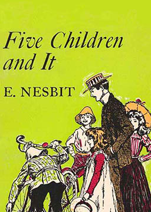
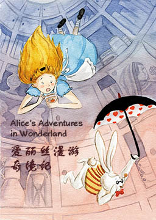

双语小说
收录中英文双语小说300多部，包括世界经典名著、社会小说、悬疑小说等短篇和长篇小说，可按照初中难度、高中难度和大学难度分类阅读，每部小说都有分段中英文对照，点击单词可查看中文翻译。

考研英语阅读真题 (Postgraduate entrance examination)
作者：未知 (unknow) [中国]
主要考查考生理解主旨要义、具体信息、概念性含义，进行有关的判断、推理和引申，根据上下文推测生词的词义等能力。要对诸如连贯性、一致性等语段特征以及文章结构的理解。阅读能力的提高是一个逐步进步的过程，需要我们持之以恒地不断前进。要想获得满意的考研英语成绩，根本的方法就是提高词汇量，加强阅读训练，同时熟悉一些阅读技巧和做题方法也是至关重要的。
不平静的坟墓（简化版） (The Unquiet Grave)
作者：蒙塔古·罗兹·詹姆斯 (M.R. James) [英国]
死去的人并非总是安静地躺在坟墓里。有时他们在这个世界上还有没做完的事情或者想为自己所受的委屈报仇雪恨；或许生活中他们自己也作过恶，即使死了也不得安宁，所以他们一定要回来给活着的人带来麻烦和恐惧。 在这5个故事中，死者可能随时随地以最奇怪地方式到来到牛津某一学院，威廉斯先生正在那儿饶有兴趣在看着一幅古旧的画作；或者光天化日之下来到年轻的汤姆森先生度假住的一家小旅馆。爱德华·邓宁先生的房间里灯灭了，他伸手去找火柴，黑暗中他的手触到的是什么？乡绅鲍尔斯的妻子和继子要问个问题，可只有鲍尔斯知道答案，你怎么去向一个躺在坟墓里的死人问题呢？当帕金斯教授吹起他拾到的一个很旧的口哨时，是只有风作答，还是有别的东西？一种你见不着、听不见却又难以想像有多么可怕的东西……格列佛游记（简化版） (Gulliver's Travels)
作者：约翰·斯威夫特 (Jonathan Swift) [英国]
外科医生格列佛先后四次出海分别到小人国、大人国、飞岛国、慧骃国等虚构国度的离奇旅行和种种遭遇,集中反映了18世纪前半期英国社会的各种矛盾,揭露了英国社会的黑暗现实，讽刺批判了英国的内政、外交政策。主人公格列佛每到一个幻想国度，都受到不同待遇，耳闻目睹，无奇不有。对每一种情景，作者都描写得栩栩栩如生，使读者如闻其声，身临其境。这部作品想象丰富、构思奇特、语言精彩，尽管隔着一层翻译，仍有许多值得我国青少年朋友学习和借鉴之处。
勃朗特一家的故事（简化版） (The Bronte Story)
作者：蒂姆·维卡里 (Tim Vicary) [英国]
勃朗特一家住在英国的霍沃斯，一个偏僻的小乡村。父亲是个牧师。在夏洛蒂五岁半的时候，她们的母亲玛丽亚因病去世。小玛丽亚承担起了母亲的责任，帮助弟弟妹妹洗澡、穿衣、跟他们玩耍、画画、读书。小玛丽亚自己的书也是读得很好。小玛丽亚在学校得了肺病，在家躺了3个月后，不幸去世。临终前，小玛丽亚对父亲说：“爸爸别哭,我马上就要和母亲见面了,我马上要和上帝在一起了。”1个月后，二女儿伊丽莎白也得同样的病去世。两周后，父亲把夏洛蒂和艾米丽接回了家。从此以后，他们再没有去过学校。天资被赋予了一个家庭。因为天资，这个家庭的成员远离尘世；离开了家他们就得不到快乐。而在家中，作为一个家庭，他们的天资却得以成长。是谁教会他们写作的？是他们自己！而且几乎没有人比他们写得更出色。
五个孩子和沙精（简化版） (Five children and it)
作者：伊迪比·内斯比特 (Edith Nesbit) [英国]
有一天孩子们在砾石坑中挖沙时发现了沙精。它已经几千岁了。当然了，沙精们可以帮人们实现他们的愿望，愿望每天只能实现一个，而且当太阳落山时一切也就结束了。安西娅、西里尔、罗伯特和简觉得这棒极了。他们的小弟弟还太小，不会许愿，而且大部分时间都呆在家里；可其他几个盘算着些激动人心的东西。可那又是什么呢？变得漂亮，富有，还是能像鸟儿一样飞翔？有时候想出真正的好望很困难，可是脱口说出“但愿……”却是很容易的，那时你就得到了并不真正想要的东西。这时沙精就不肯帮忙了。出了差错时它就生气地说：“为什么你不先想好了再说？” 而事情的确常出差错……
一个国王的爱情故事（简化版） (The Love of a King)
作者：彼德·戴恩蒂 (Peter Dainty) [英国]
国王虽然永远不会是独自一人但他总是感到孤独，每时每刻总会有人注视他，有时是他的保镖，有时是街上成千的民众。他永远不会独自一人；每个人都认识他的面孔，他做事必须检点，因为他的所作所为是无法保密的。他说话得谨慎，因为他说话总有人在听。因为他每时每刻都是国王。他的压力很大也很孤独，甚至是从小开始，从未和其他的孩子一起玩过，他也没有朋友。他住在英国最漂亮的房子里（白金汉宫），却总感到寂寞、悲伤。在他年轻的时候想要的东西都能得到。“但我并不快乐，因为他的内心里是空虚的。”直到国王遇见了沃利斯一切都变了。他为了她放弃了一切，甚至放弃了自己的王位！
爱丽丝镜中世界奇遇记（简化版） (Through the Looking-Glass and What Alice Found There)
作者：刘易斯·卡罗尔 (Lewis Carroll) [英国]
小姑娘爱丽丝在梦中种种神奇虚幻的经历。她走进了镜中世界，遭遇了装腔作势、奇笨无比的红白棋王后；好和花儿说话、与动物昆虫共处，当爱丽丝走入镜中，时光发生了倒流，出现了许多奇怪的情景：原本沉默的花草动物也开口说话了；绵羊戴着眼镜在织毛衣；在那些怪物的眼中，人才是真正可笑、不可思议的怪物。卡罗尔根据镜中影像与真实形象相反的基本原理，将爱丽丝的这一场梦发生的场地设计在镜子之中。镜中的一切景象都是颠倒的，制造了十分荒诞而又滑稽可笑的效果。
爱丽丝漫游奇境记（简化版） (Alice's Adventures in Wonderland)
作者：刘易斯·卡罗尔 (Lewis Carroll) [英国]
一位可爱的英国小女孩爱丽丝在百般无聊之际，发现了一只揣着怀表、会说话的白兔。她追赶着它而不慎掉进了一个兔子洞，由此坠入了神奇的地下世界。在这个世界里，喝一口水就能缩得如同老鼠大小，吃一块蛋糕又会变成巨人，同一块蘑菇吃右边就变矮，吃其左边则又长高，在这个世界里，似乎所有吃的东西都有古怪。她还遇到了一大堆人和动物：渡渡鸟、蜥蜴比尔、柴郡猫、疯帽匠、三月野兔、睡鼠、素甲鱼、鹰头狮、丑陋的公爵夫人。她在一扇小门后的大花园里遇到了一整副的扑克牌，牌里粗暴的红桃王后、老好人红桃国王和神气活现的红桃杰克（J）等等。爱丽丝帮助兔子寻找丢失的扇子和手套，她之后还帮三个园丁躲避红王后的迫害，她还在荒诞的法庭上大声抗议国王和王后对好人的诬陷。在这个奇幻疯狂的世界里，似乎只有爱丽丝是清醒的人，她不断探险，同时又不断追问“我是谁”，在探险的同时不断认识自我，不断成长，在终于成长为一个“大”姑娘的时候，她猛然惊醒，才发现原来这一切都是自己的一个梦境。神秘及幻想故事集（简化版） (Tales of Mystery and magination)
作者：埃德加·爱伦·坡 (Edgar Allan Poe) [英国]
你正置身于湖畔的一座古旧宅邸之中。时间是夜里，外面暴雨肆虐，狂风绕着灰色的石墙嘶吼。房子下面的一间阴森的地窖里放着一口棺材，里面躺着玛德琳小姐的尸体。同你一起待在房间里的是她的哥哥，正在用疯狂的目光望着你。想象一下吧！你这是在鄂榭府上。翻到另一页，可以见到一只黑猫被人勒住脖子吊在树上。再翻一页，你就会听到一次美妙绝伦的假面舞会上响起的音乐声，看见一千个人在唱歌、跳舞。你现在是在普洛斯佩罗亲王的城堡中。城堡里面灯火通明、生气勃勃，人人纵情狂欢；但是在城墙外面，逡巡着那可怕的载面具的红死魔！这些故事将会带你进入一个阴暗的幻想世界，一个充满了恐怖、梦幻与疯狂的世界。织工马南（简化版） (Silas Marner)
作者：乔治·艾略特 (George Eliot) [英国]
老实善良的织布工人马南因被好友诬陷犯有偷窃罪,被迫背井离乡。他在一个偏僻乡村的石屋里住了15年,整天埋头织布,积攒了一袋钱币,不幸在一个漆黑的雨夜被人盗走。马南万念俱灰,终日呆坐。圣诞之夜,石屋外一个妇人冻死在雪地里,她的女儿,一个不足两岁的婴儿爬进了石屋,马南收养了这个女婴,取名艾比。从此马南的生活有了起色。16年后,曾狠心抛弃艾比母女的地主、艾比的亲生父亲乔治,中年无嗣,将艾比领回家中,然而艾比决定与慈爱的养父生活在一起。